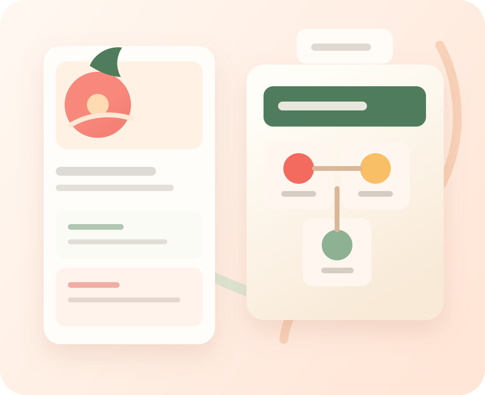

PRACTICAL AI WORKSHOP
내 일 하나를 AI에게 맡기는 2시간 실습
AI를 써보고 끝내지 말고, 오늘 반복되는 일 하나를 실제 결과물로 바꿔 봅니다.
왕초보도 생활 언어로 따라오고, 수업이 끝나면 병원 비교표, 여행 일정표, 업무 안내문처럼 바로 써먹을 결과물이 손에 남습니다.
핵심만 보고 30초 안에 상담 신청까지 이어집니다.
- 2시간 실습설명보다 직접 만들기
- 결과물 1개 완성표, 안내문, 일정표 중 하나
- 왕초보 가능질문문부터 같이 작성
- 상담 후 안내수업 방식과 준비물 확인
- 2시간 실습 설명 10분 + 따라하기 30분 + 개인 실습 20분 + Q&A 20분
- 결과물 중심 배운 내용이 표, 일정표, 안내문, 요청문으로 바로 남습니다
- 초보 맞춤 에이전트 대신 "AI 비서", 워크플로 대신 "자동으로 해주는 일"

작업장 대시보드
요청이 결과물과 사용 위키로 이어지는 흐름
요청 접수
조건 정리
AI 실행
검증
완성된 표, 안내문, 체크리스트를 다음에도 다시 쓰게 저장합니다.
핵심 메시지
AI가 대신 해주되, 내 질문 수준이 결과 품질을 결정한다.컴퓨터를 더 잘해야 하는 시대가 아니라, AI 비서를 시켜서 시간을 버는 시대입니다.
구아바의 AI 공방은 답변을 복붙하는 수업이 아니라, 내 문제를 실제로 해결하는 흐름을 훈련합니다.
30초 AI 진단
나는 어떤 AI 수업이 맞을까?
지금 가장 가까운 상황을 골라 보세요. 선택한 내용에 맞춰 추천 수업 방향과 신청 문구를 바로 정리해 드립니다.
CLASS PACKAGES
나에게 맞는 수업 고르기
진단 결과를 보고도 망설여진다면 아래 네 가지 중 가장 가까운 방향을 고르면 됩니다. 가격은 수업 인원, 방식, 범위에 따라 상담 후 안내합니다.
왕초보 추천
AI 첫걸음 2시간
AI를 처음 켜는 사람도 질문문을 만들고, 표와 안내문 형태의 첫 결과물을 완성합니다.
- 대상
- 왕초보, 부모님, AI를 처음 쓰는 분
- 결과물
- 질문 템플릿 3개, 생활 정보 정리표 1개
- 방식
- 1회 2시간 실습
생활 활용
생활 AI 실습반
병원, 여행, 가족 정보처럼 흩어진 생활 자료를 비교표와 공유 문서로 바꿉니다.
- 대상
- 가족 정보 정리, 생활 의사결정이 필요한 분
- 결과물
- 병원 비교표, 여행 일정표, 가족 공유 문서
- 방식
- 1회 특강 또는 소규모 워크숍
업무 활용
업무 AI 실행반
반복 안내문, 문서 초안, 체크리스트를 AI에게 맡기는 업무 흐름을 만듭니다.
- 대상
- 반복 문서와 정리 업무가 많은 실무자
- 결과물
- 업무 안내문, 검토 체크리스트, 반복 프롬프트
- 방식
- 팀 워크숍 또는 개인 실습
제작 입문
AI 봇 제작 입문
질문 한 번으로 끝나지 않고, 목표와 자료와 검증이 이어지는 작은 AI 작업 흐름을 설계합니다.
- 대상
- AI 봇, 자동화, 하네스 설계에 관심 있는 분
- 결과물
- AI 작업 흐름 설계도, 봇 기획서, 검증 루틴
- 방식
- 상담 후 맞춤형 구성
AI DESIGN LAB
아이디어가 시안이 되고, 시안이 결과물이 됩니다
AI는 이제 답변만 쓰는 도구가 아닙니다. 말로 적은 아이디어와 기존 자료를 브랜드 기준에 맞는 발표자료, 카드뉴스, 랜딩페이지 초안으로 바꾸는 작업 파트너가 되고 있습니다.
수업에서 익히는 흐름
아이디어 → 시안 → 수정 → 공유/구현
한 번에 완벽한 결과를 요구하지 않습니다. 기준문서를 읽히고, 첫 시안을 만든 뒤, 대화로 문구와 배치를 고치고, 공유 가능한 파일이나 웹페이지로 이어지게 만듭니다.
자료 넣기
메모, 캡처, 문서, 기존 웹페이지를 AI가 이해할 수 있는 입력으로 정리합니다.
기준 적용
색상, 폰트, 말투, 금지 규칙을 기준문서로 고정해 결과물이 흔들리지 않게 합니다.
시안 만들기
발표자료, 카드뉴스, 수업 소개 페이지, 랜딩페이지 초안을 빠르게 만듭니다.
대화로 수정
문구를 줄이고, 강조점을 바꾸고, 모바일에서 어색한 배치를 다시 고칩니다.
Canva 초안
PDF 안내문
PPTX 발표자료
HTML 랜딩페이지
AI GROWTH MAP
AI를 쓰는 사람에서, AI가 일하게 만드는 사람으로
구아바의 AI 공방은 지금 내 위치를 확인하고, 질문하는 사람에서 실행을 설계하는 사람으로 넘어가는 길을 보여줍니다.
AI 입문자
AI를 켜긴 하지만 무엇을 물어봐야 할지 자주 막힙니다.
AI 실행자
여행 일정, 병원 비교표, 안내문처럼 바로 쓰는 결과물을 만듭니다.
AI 설계자
목표, 자료, 실행, 검증을 이어 붙여 AI가 일하는 순서를 만듭니다.
AI 제작자
나만의 질문 템플릿, 사용 위키, 작은 AI 봇 아이디어까지 확장합니다.
AI BOT BUILDER
AI 봇을 직접 만든 사람이 초보자용 수업으로 바꿨습니다
직접 만든 AI 봇 4개로 검증한 실전형 AI 수업입니다. 에르9, 망고빙수, 망고, 망고2를 만들고 운영하며 쌓은 흐름을 생활형 실습으로 바꿔 전달합니다.
에르9
생각은 중앙에서 하고, 실행은 여러 도구와 에이전트가 나눠 처리합니다.
망고빙수
요청을 받아 팀을 나누고, 중간 확인 없이 결과를 정리해 보고합니다.
망고 · Openclaw Agent
접수, 실행, 검토, 축적의 흐름으로 결과와 기억을 함께 남깁니다.
망고2
한 번 말하면 내부에서 질문 정렬, 라우팅, 실행, 자산화로 처리합니다.
BUILD LOG
운영자 검증 로그
후기처럼 꾸미지 않고, 직접 운영한 AI 봇에서 검증한 흐름만 수업 언어로 바꿉니다. 초보자는 복잡한 시스템을 외우지 않고, 내가 바로 쓸 수 있는 순서만 가져갑니다.
중앙 두뇌와 분산 실행
요청을 한곳에서 이해하고, 필요한 도구와 서브 작업을 나눠 실행한 뒤 다시 합칩니다.
질문 정렬과 작업 메모리
흩어진 요청을 raw, parsed, triage, compiled 흐름으로 정리해 다음 작업에 이어 씁니다.
실행과 검증을 초보자 언어로
하네스, 위키, 검증 루틴을 표 만들기, 안내문 고치기, 다시 쓰는 질문문으로 바꿉니다.
AGENT FLOW PRINCIPLE
AI 조직도보다 중요한 것은 하나의 작업 흐름입니다
AI를 CEO, 개발자, 디자이너처럼 사람 조직도에 끼워 넣지 않습니다. 역할을 많이 나누기보다, 하나의 문맥 안에서 목표와 자료와 검증이 끊기지 않게 이어지는 구조를 배웁니다.
사람 조직도 흉내
- CEO AI, 기획자 AI, 디자이너 AI를 계속 늘립니다
- 역할이 많아질수록 핸드오프가 늘어납니다
- 전달 과정에서 맥락과 의도가 흐려집니다
사람처럼 나누지 말고, AI답게 흐르게 합니다
- 중앙 문맥을 한곳에 모읍니다
- 필요한 순간에 탐색, 작성, 검증 모드로 전환합니다
- 결과를 다시 쓸 수 있는 작업 흐름으로 남깁니다
중앙 문맥
목표, 조건, 자료, 판단 기준을 흩어지지 않게 잡습니다.
작업 모드
사람 역할 대신 탐색, 작성, 정리, 검증 모드로 전환합니다.
검증 루틴
AI가 만든 결과를 그대로 믿지 않고 누락과 과장을 확인합니다.
MODEL IS NOT ENOUGH
AI가 막히는 이유는 모델이 아니라 구조입니다
같은 GPT나 Claude를 써도 결과가 크게 달라지는 이유는 모델 성능보다 운영 구조 차이일 때가 많습니다. 문제는 모델이 아니라 AI가 일하는 구조일 수 있습니다.
Agent = Model + Harness
모델은 두뇌이고, 하네스는 그 두뇌가 실제 일을 하게 만드는 운영 구조입니다. 좋은 에이전트는 좋은 모델만으로 만들어지지 않습니다.
목표
AI에게 맡길 일을 한 문장으로 좁히고 성공 기준을 정합니다.
맥락
대상, 조건, 자료, 이전 결정이 중간에 끊기지 않게 붙잡습니다.
도구
검색, 문서, 표, 메모처럼 필요한 도구를 작업 흐름에 연결합니다.
검증
그럴듯한 답을 그대로 쓰지 않고 누락, 과장, 다음 행동을 확인합니다.
기억
잘 만든 질문과 결과물을 다시 쓸 수 있는 개인 작업 위키로 남깁니다.
수업에서 만드는 작은 하네스
병원 비교표, 여행 일정표, 업무 안내문, AI 봇 설계서에 이 구조를 적용합니다. 모델 이름을 외우는 수업이 아니라 AI가 목표를 이해하고, 자료를 붙잡고, 결과를 만들고, 사람이 검증하고, 다시 쓸 수 있게 남기는 흐름을 실습합니다.
AI EXECUTION DESIGN
AI가 일하는 순서를 직접 만들어 봅니다
질문 하나를 잘 쓰는 데서 끝나지 않습니다. 목표를 정하고, 필요한 자료를 붙이고, AI가 결과물을 만들게 한 뒤, 사람이 확인할 수 있는 흐름으로 바꿉니다.
목표 정리
AI에게 맡길 일을 한 문장으로 좁히고, 성공 기준을 먼저 정합니다.
자료 연결
가족 상황, 일정, 조건, 기존 문구처럼 판단에 필요한 맥락을 붙입니다.
단계 실행
표, 일정, 안내문, 체크리스트처럼 바로 쓸 수 있는 결과물로 변환합니다.
검증 루틴
누락, 과장, 이상한 답을 확인하고 다시 시키는 복구 문장을 익힙니다.
LLM-WIKI FOR BEGINNERS
나만의 AI 사용 위키
수업에서 만든 질문과 결과물을 한 번 쓰고 버리지 않습니다. 다음에도 다시 쓰는 개인용 AI 작업 노트로 남깁니다.
- 자주 쓰는 질문 템플릿
- 가족 일정과 생활 정보 정리법
- 업무 안내문과 카톡 문구 샘플
- AI가 이상하게 답할 때 고치는 문장
PERSONAL AI WORKSPACE
수업이 끝나면, 나만의 AI 작업장이 남습니다
좋은 질문 하나를 배우고 끝내지 않습니다. 내 생활과 업무에서 다시 꺼내 쓸 수 있는 질문, 실행 순서, 검증 기준, 개인 위키를 함께 만듭니다.
수업 후 남는 것
AI를 켤 때마다 다시 시작하지 않는 구조
매번 "뭐라고 물어보지?"에서 출발하지 않도록, 내 상황에 맞는 작업장을 만들어 둡니다. 질문, 자료, 결과, 검증을 한 흐름으로 이어서 다음 작업에도 바로 씁니다.
- 내가 자주 시키는 일 3개를 정리합니다
- 다시 쓰는 질문문과 결과물 형식을 남깁니다
- AI 답변을 확인하는 검증 문장을 붙입니다
내 질문 템플릿
병원 비교, 여행 일정, 업무 안내문처럼 자주 쓰는 질문을 내 말투로 저장합니다.
반복 업무 실행 순서
자료 넣기, 표 만들기, 안내문 바꾸기처럼 AI가 일하는 순서를 정합니다.
검증 체크리스트
빠진 내용, 과장된 답, 바로 보내면 안 되는 문장을 확인하는 기준을 둡니다.
개인 AI 사용 위키
수업에서 만든 질문과 결과물을 한 번 쓰고 버리지 않고 계속 쌓아 둡니다.
WHAT YOU LEAVE WITH
수업 끝나면 이런 결과물이 손에 남습니다
평범한 표 하나로 끝내지 않습니다. 내 말을 AI가 다시 쓸 수 있는 작전판, 리포트, 업무 데스크, 질문 템플릿으로 바꾸는 경험을 남깁니다.
가족 작전실 리포트
Before 여행 일정 짜줘
After 적게 걷고, 해산물은 피하고, 택시 2회까지 반영
- 오전: 역 근처 체크인 전 가벼운 코스
- 점심: 해산물 제외 식당 후보 2곳
- 공유문: 엄마, 이 일정이면 많이 안 걸어도 돼요.
가족 회의용 병원 선택 리포트
Before 검진 어디서 하지?
After 거리, 비용, 후기, 예약 난이도를 한 장으로 정리
- 결론: 이동이 편한 A병원 우선
- 주의: 검사 항목이 다른 병원은 별도 확인
- 공유문: 제가 보기엔 A병원이 가장 무난해 보여요.
AI 비서 업무 데스크
Before 직원 안내문 써줘
After 공지문, 체크리스트, 카톡 안내 초안을 한 번에 생성
- 오늘 보낼 문장: 신규 안내 공지 초안
- 확인 질문: 대상, 날짜, 준비물
- 다음 행동: 복사해서 단체방에 붙여넣기
망고2 질문 템플릿팩
Before AI한테 뭐라고 물어보지?
After 생활, 가족, 업무용 질문문을 다시 쓰는 세트로 저장
정리해줘
비교해줘
보낼 말로 바꿔줘
SAMPLE KIT
수업 샘플 미리보기
수업에서 다루는 결과물은 거창한 이론이 아니라 바로 복사해서 고쳐 쓸 수 있는 문장입니다. 아래 샘플을 눌러 상담 전에 어떤 결과물이 남는지 먼저 확인할 수 있습니다.
병원 비교표 샘플
거리, 비용, 예약 난이도, 가족에게 설명할 결론을 한 장으로 정리합니다.
병원 비교표 샘플 기준: 거리 / 비용 / 예약 가능일 / 주의할 점 결론: 가족에게 설명하기 쉬운 추천 순서로 정리해 주세요.
여행 일정표 샘플
동선, 식사 조건, 쉬는 시간을 반영해 가족 공유용 일정표로 바꿉니다.
여행 일정표 샘플 조건: 걷는 시간 적게 / 식사 후보 2개 / 택시 이동 가능 출력: 오전, 점심, 오후, 저녁 순서의 표로 정리해 주세요.
업무 안내문 샘플
공지문, 체크리스트, 카톡 안내문을 같은 내용에서 한 번에 만듭니다.
업무 안내문 샘플 대상: 신규 직원 목표: 첫날 준비물을 빠짐없이 안내 출력: 공지문, 체크리스트, 카톡 문구로 나눠 주세요.
AI 봇 기획서 샘플
내 봇이 받을 요청, 확인할 자료, 검증할 기준을 작은 설계서로 정리합니다.
AI 봇 기획서 샘플 목표: 반복 상담 문의를 정리하는 작은 AI 봇 흐름: 접수 → 질문 정렬 → 답변 초안 → 검증 검증 기준: 누락, 과장, 다음 행동을 확인해 주세요.
MISSION LAB
오늘 완성하는 AI 미션 4개
좋은 AI 수업은 설명보다 손에 남는 결과물이 먼저입니다. 각 미션은 15분에서 30분 안에 끝나는 작은 작업장으로 구성해, 수업이 끝나면 바로 다시 쓸 수 있는 결과물을 남깁니다.
병원 비교표 만들기
가족이 이해하기 쉽게 거리, 비용, 예약 가능일, 주의점을 표로 정리합니다.
- 시간
- 15분
- 결과물
- 병원 비교표 + 가족 공유 문구
여행 일정 AI에게 맡기기
동선, 식사 조건, 쉬는 시간을 반영한 가족 공유용 일정표를 만듭니다.
- 시간
- 20분
- 결과물
- 1박 2일 일정표 + 카톡 안내문
업무 안내문 자동 생성하기
반복 안내를 공지문, 체크리스트, 메시지 초안으로 한 번에 바꿉니다.
- 시간
- 20분
- 결과물
- 업무 안내 세트 3종
내 AI 봇 설계서 만들기
내가 반복해서 받는 요청을 접수, 정렬, 실행, 검증 흐름으로 설계합니다.
- 시간
- 30분
- 결과물
- AI 봇 기획서 초안
결과물 갤러리
수업 후 이런 파일과 문구가 남습니다
- 비교표선택 기준과 추천 이유가 보이는 표
- 일정표조건이 반영된 하루 또는 1박 2일 계획
- 안내문바로 보낼 수 있는 공지문과 카톡 문구
- 봇 설계서요청, 자료, 실행, 검증이 이어지는 작은 설계
CORE PHILOSOPHY
공방이 가르치는 세 가지
질문의 해상도
좋은 답을 받는 법보다, 좋은 질문을 만드는 법을 먼저 익힙니다. 맥락, 조건, 출력 형식을 분명히 적는 연습이 핵심입니다.
답변형 AI에서 실행형 AI로
설명만 듣고 끝나지 않습니다. 한 줄 요청이 문서가 되고, 체크리스트가 되고, 실제 할 일로 이어지는 구조를 보여줍니다.
생활밀착 실습
병원 정보 비교표, 여행 일정 정리, 교육 정보 요약처럼 수강생의 현실 문제를 바로 해결하는 과제로 연습합니다.
QUESTION RESOLUTION
질문의 해상도를 높이면 결과가 달라집니다
구아바의 AI 공방은 초보 수강생에게 3단계 질문 프레임을 제공합니다. 같은 요청도 어떻게 묻느냐에 따라 결과의 품질이 달라지는 경험을 직접 하게 됩니다.
막연한 질문
여행 일정 짜줘
구체화된 요청
대상, 조건, 우선순위, 출력 형식을 붙입니다.
실행 결과물
표, 일정표, 안내문, 체크리스트로 받습니다.
검증된 템플릿
다음에도 다시 쓰는 나만의 요청문으로 저장합니다.
생활 예시
저해상도 질문
"여행 일정 짜줘"
고해상도 질문
"부모님과 1박 2일로 부산에 가요. 걷는 시간이 적고, 식사는 해산물 위주가 아니었으면 좋겠어요. 표로 일정 짜 주세요."
결과 미리보기
이동 시간을 줄인 일정표 오전·점심·오후 동선과 식사 후보를 표로 정리업무 예시
저해상도 질문
"신규 직원 교육 자료 만들어줘"
고해상도 질문
"신규 상담 직원용 교육자료가 필요해요. 교육 시간은 30분, 목표는 첫 통화 품질 통일입니다. 체크리스트 형식으로 정리해 주세요."
결과 미리보기
첫 통화 체크리스트 인사말, 확인 질문, 마무리 멘트를 한 장으로 정리가족 예시
저해상도 질문
"손주 교육 정보 정리해줘"
고해상도 질문
"초등학생 손주를 위한 AI 체험 프로그램을 찾고 있어요. 서울권, 주말 가능, 비용은 10만원 이하로 표로 비교해 주세요."
결과 미리보기
주말 AI 체험 비교표 장소, 시간, 비용, 추천 이유를 가족 공유용으로 정리CURRICULUM FLOW
왕초보도 따라오는 4단계 실습 커리큘럼
왜 AI인가
"오픈클로가 뭐냐"보다 "내 삶에서 무엇이 편해지느냐"를 먼저 보여줍니다. 결과 화면을 먼저 보고 흥미를 붙입니다.
질문의 해상도
맥락, 조건, 출력 형식을 묻는 법을 익힙니다. 같은 주제를 낮은 해상도 질문과 높은 해상도 질문으로 비교해 차이를 체감합니다.
실행형 AI 경험
답변을 읽는 데서 끝나지 않고, 비교표, 일정표, 요약문 같은 파일형 결과물을 받는 흐름을 직접 실습합니다.
90일 실사용 루프
관심만 높은 상태에서 벗어나기 위해 30일, 60일, 90일 과제로 연결하고 실패를 복구하는 루틴까지 함께 익힙니다.
PRACTICE MISSIONS
실습은 현실 문제로 시작합니다
시험형 교육 대신 실전형 교육이 실사용률을 더 빠르게 끌어올린다는 가설을 바탕으로, 바로 생활에 붙는 미션을 설계했습니다.
병원·검진 정보 비교표
복잡한 의료 정보를 표로 정리하고, 중요한 조건만 남기는 법을 배웁니다.
- 검색 시간 감소
- 정리 피로 감소
- 조건 비교 훈련
1박 2일 여행 일정 자동 정리
이동 시간, 예산, 동행자 조건을 넣어 실행 가능한 일정표를 만듭니다.
- 맥락 명시 훈련
- 출력 형식 지정
- 실패한 요청 수정법
자녀·손주 교육 정보 요약
흩어진 정보를 비교표와 체크리스트로 묶어 가족 의사결정을 돕습니다.
- 생활밀착형 문제 해결
- 가족 공유 문서 제작
- 반복 활용 가능한 템플릿
FOR WHOM
이런 분은 바로 신청해도 좋습니다
AI를 켜도 뭘 물어볼지 막히는 분
전문 용어 없이 생활 언어로 시작하고, 결과 화면을 보며 따라옵니다.
가족과 생활 정보를 정리해야 하는 분
병원, 여행, 교육 정보처럼 바로 필요한 주제를 표와 일정표로 만듭니다.
반복 안내문을 줄이고 싶은 분
문서 초안, 체크리스트, 공지문처럼 자주 쓰는 업무 문장을 빠르게 정리합니다.
CLASS FORMAT
수업은 이렇게 진행됩니다
이해보다 전환, 설명보다 실습을 목표로 구성했습니다. 보고, 따라 하고, 내 문제에 적용하고, 막히면 복구하는 흐름을 한 번에 경험합니다.
결과를 먼저 보여주는 오프닝
"AI가 뭔가요?"보다 "그래서 내 삶이 어떻게 편해지나요?"를 먼저 보여줘서 진입장벽을 낮춥니다.
같이 따라 하는 실습
병원 정보 비교표, 여행 일정표, 교육 정보 정리처럼 바로 쓰는 과제를 같이 완성합니다.
내 상황에 맞춘 적용
똑같이 따라 하는 단계에서 멈추지 않고, 각자 생활과 업무 문제에 맞춰 질문을 다시 설계합니다.
실패와 복구 루틴
AI가 이상한 답을 내도 끝나지 않습니다. 요청을 어떻게 수정하고, 다음 시도를 어떻게 설계하는지까지 함께 연습합니다.
“AI의 미래는 더 똑똑한 답변이 아니라, 실제 도구와 워크플로 안으로 들어가는 실행형 시스템입니다.”
구아바의 AI 공방은 설명형 수업보다 결과가 남는 수업, 복붙보다 흐름을 만드는 수업을 지향합니다.
NO WORRIES
이런 걱정이 있어도 괜찮습니다
신청 전에 망설이는 지점을 수업 안에서 바로 풀어갑니다. 처음부터 잘할 필요 없이, 내 말이 결과물이 되는 과정을 같이 따라갑니다.
컴퓨터를 잘 못해도 됩니다
설치와 설정보다 결과 화면을 먼저 보고, 클릭과 복사 중심으로 따라갑니다.
질문문은 같이 만듭니다
처음부터 잘 물어볼 필요 없습니다. 생활 문장을 AI용 요청문으로 바꿉니다.
수업 후 다시 쓸 문구를 가져갑니다
수업이 끝나도 다시 붙여 넣어 쓸 수 있는 개인용 질문 템플릿을 남깁니다.
막히는 상황도 수업에 포함합니다
AI가 이상하게 답할 때 질문을 고치고 다시 시도하는 복구 루틴까지 봅니다.
READY TO START
30초만 적으면 수업 상담으로 이어집니다
어떤 수업이 맞을지 간단히 적어 주세요. 확인 후 수업 방식과 준비물을 안내드립니다.
신청 접수
신청서를 보내면 수업 상담으로 이어집니다
이름과 연락처, 내 상황을 적어 주세요. 작성한 내용은 ninefire@naver.com으로 접수됩니다.
30초 정도면 작성할 수 있습니다.
이런 문의에 적합
- 왕초보 대상 AI 입문 강의
- 중장년층 생활형 AI 실습 클래스
- 소규모 스터디·워크숍 랜딩페이지 소개
문의 전에 정하면 좋은 것
- 누가 듣는지: 초보 / 중장년 / 실무자
- 무엇이 필요한지: 생활 / 업무 / 가족 교육
- 어디까지 원하는지: 체험 / 1회 특강 / 실습 중심 과정
FAQ
처음 배우는 분들이 자주 묻는 질문
컴퓨터를 잘 못해도 괜찮나요?
괜찮습니다. 공방은 기술 설명보다 결과 화면을 먼저 보여주고, 용어를 생활 언어로 바꿔 설명합니다.
챗GPT 수업과 뭐가 다른가요?
답변을 받는 데서 끝나지 않고, 비교표·일정표·요약문처럼 실제로 쓰는 결과물을 만드는 흐름까지 다룹니다.
배운 뒤에도 계속 쓸 수 있나요?
네. 30·60·90일 실사용 루프로 연결해서 한 번의 체험이 아니라 생활 속 습관으로 이어지도록 설계했습니다.